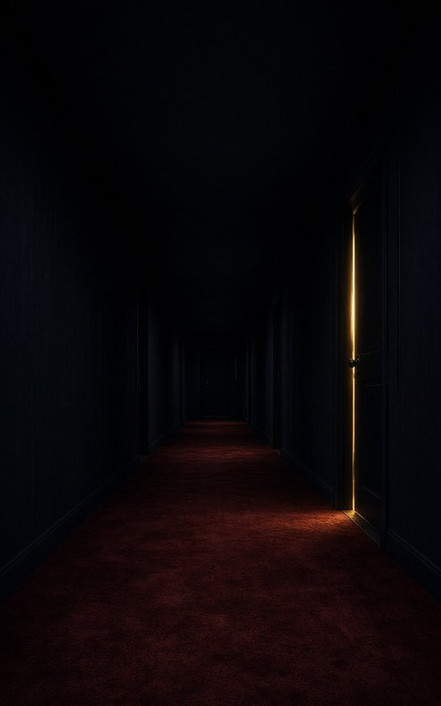
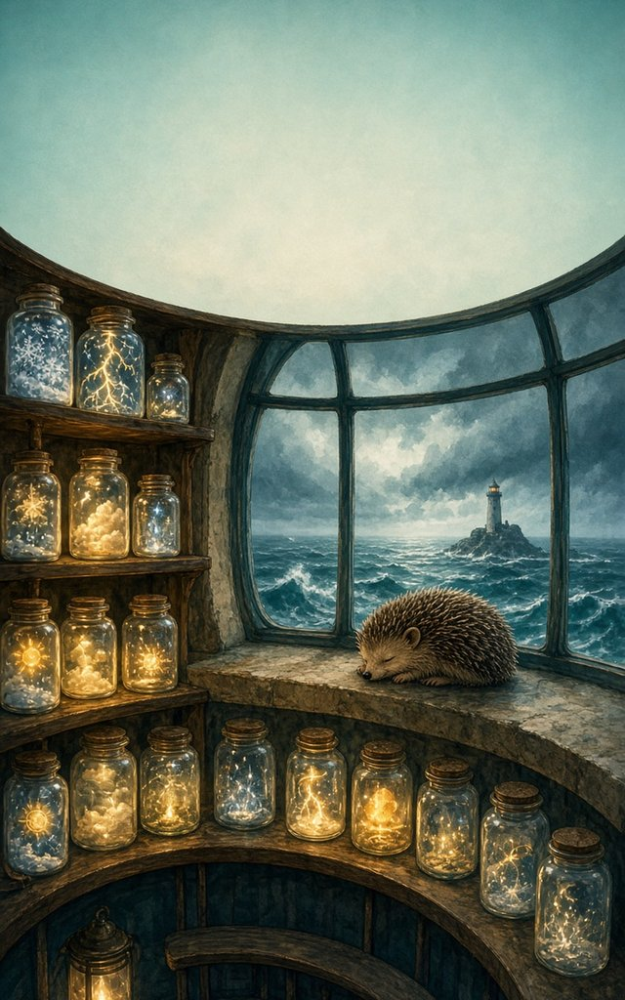
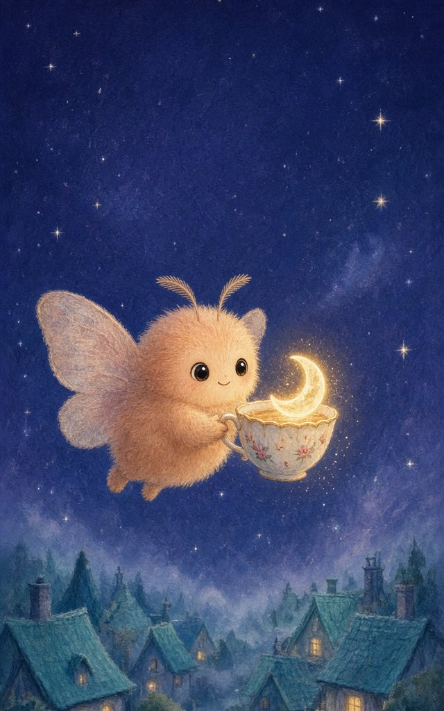

Sample concept covers, not client work. Created with AI image tools for demonstration. These are six made-up books with invented titles and authors, made to show Quillbench’s range. Final covers for clients carry real typography; this cover art has no text on it.
Sample concept cover, not client work. Created with AI image tools for demonstration.
Second-chance rom-com
The Overbooked Heart
Delia Marchetti
Faking a romance across her own small-town bakery counter was supposed to be easy, until the latte-art heart she drew for show started to crack for real.

Sample concept cover, not client work. Created with AI image tools for demonstration.
Domestic psychological thriller
The Quiet Floor
R. J. Halloway
The floor is supposed to be empty, so who keeps leaving a door ajar at the end of the hall, and why is she the only one who hears it?

Sample concept cover, not client work. Created with AI image tools for demonstration.
Cozy fantasy
The Lantern-Keeper's Almanac
Wren Ashdown
A retired witch keeps a lighthouse that lends out storms, sunbeams and snowfall in glass jars, and one hedgehog is always asleep on the sill.
Sample concept cover, not client work. Created with AI image tools for demonstration.
Space opera · The Concordance, Book One
The Tithe of Halcyon
Idris Okonkwo-Lane
Every year at dawn, a procession climbs the light-bridge into the cathedral-shaped ship, and this year humanity's tribute to its alien masters may finally come due in full.
Sample concept cover, not client work. Created with AI image tools for demonstration.
Food & family memoir
Salt in the Sugar Bowl
Nadia Haddad-Ruiz
In my mother's immigrant bakery, the chipped cobalt sugar bowl sat in plain sight for decades, along with everything she never said.

Sample concept cover, not client work. Created with AI image tools for demonstration.
Picture book, ages 3–7
The Moth Who Borrowed the Moon
Words by Tamsin Oduya, pictures by Leo Varga
When the night grows too dark for her friends, one small moth carries the moon home in a teacup.